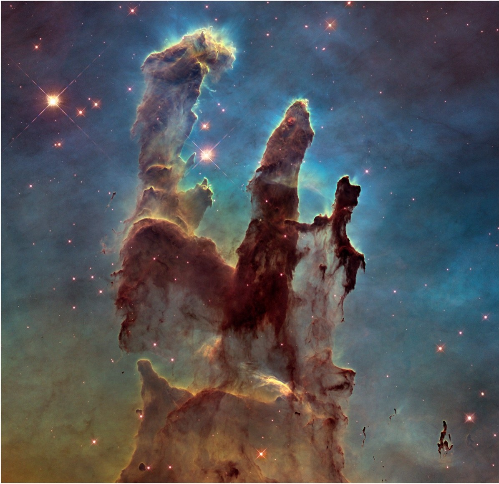
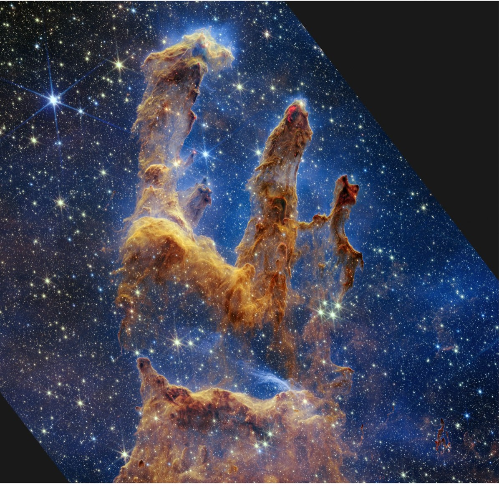
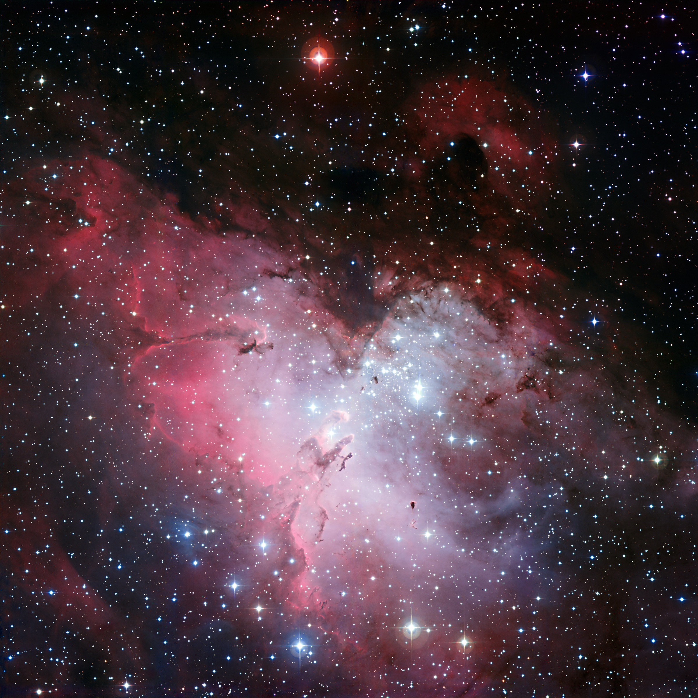
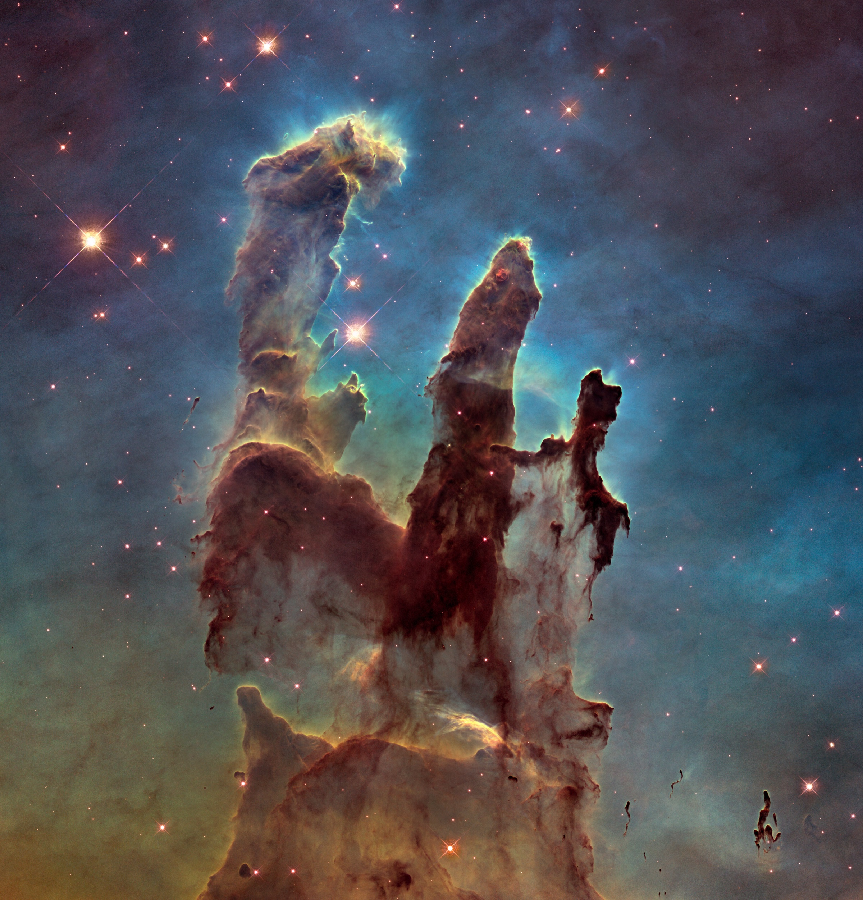
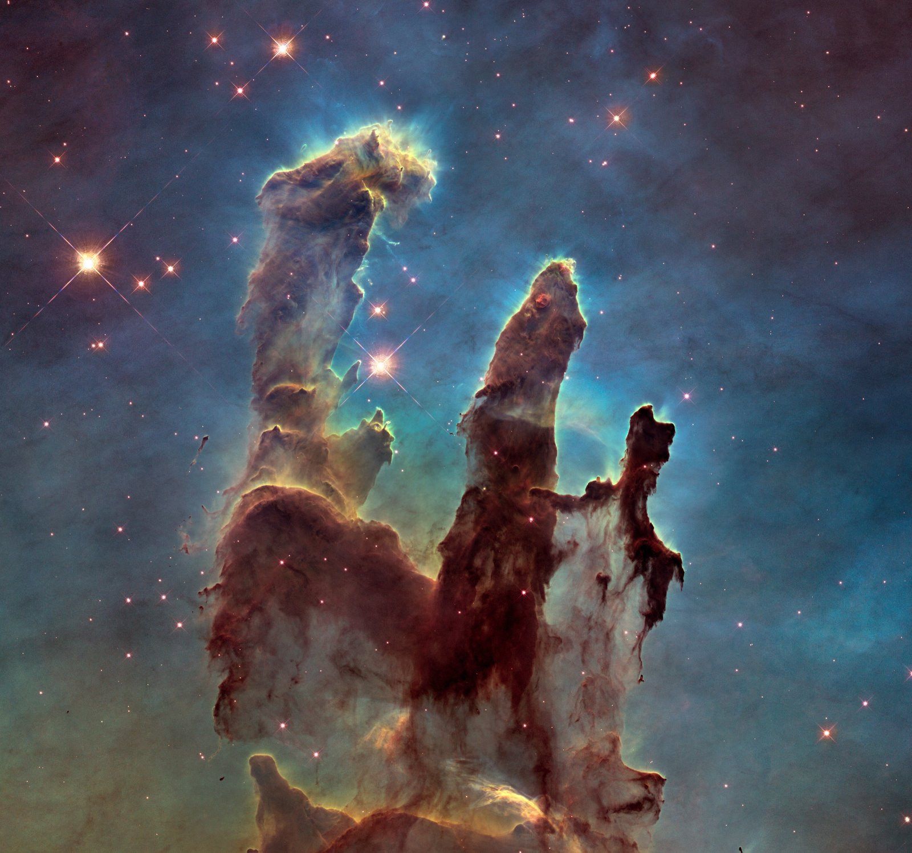
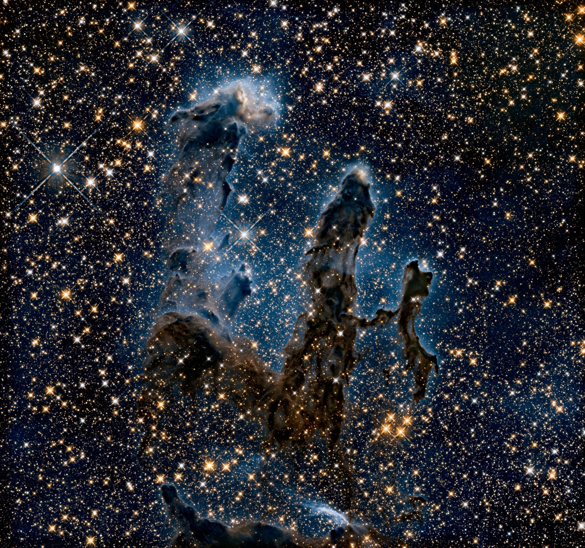
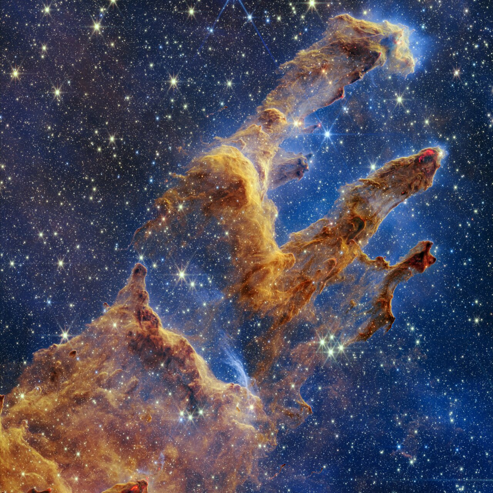
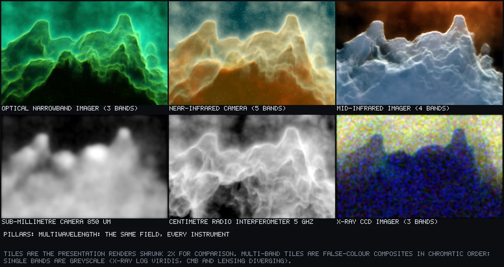
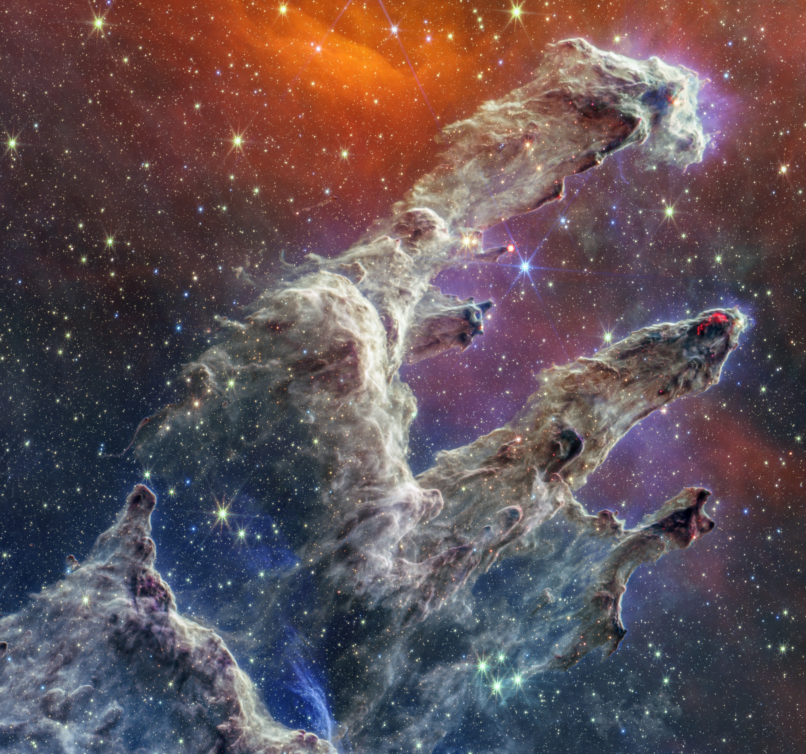

<title>Journey to the Pillars</title>
<meta name="viewport" content="width=device-width, initial-scale=1, viewport-fit=cover">
<meta name="claude:viewport-fit-sides" content="cover">
<link rel="preconnect" href="https://fonts.googleapis.com">
<link rel="stylesheet" href="https://fonts.googleapis.com/css2?family=JetBrains+Mono:ital,wght@0,400;0,500;0,600;0,700;1,400&display=swap">
<link rel="stylesheet" href="lib/core.css">
<main>
<nav class="termbar"><a href="https://zahin-tapadar.vercel.app/">zahin</a><span>~/blog/a-journey-to-the-pillars-of-creation</span></nav>
<header>
<p class="eyebrow" style="margin-top:40px">Eagle Nebula · Messier 16 · Serpens Cauda</p>
<h1 id="top">A Journey to the Pillars of Creation</h1>
<p class="dek">Three columns of cold gas, each light-years tall, stand thousands of light-years from Earth. Starlight is eating them away, and new stars are forming inside them while they burn. This essay flies you there and works out what you are looking at.</p>
</header>
<figure id="fig-intro-hero"><div class="stage" data-aspect="0.62"></div><figcaption>A ray-marched model of the three pillars, about 1.3 parsecs tall, lit from the upper right by the cluster NGC 6611. Drag to orbit, and slide toward longer wavelengths to watch the dust turn translucent. Schematic geometry, real dust physics.</figcaption></figure>


<figure class="narrow"><div class="swipe" data-label="Drag to compare Hubble 2014 and Webb 2022"><span class="tag" style="left:10px">Webb 2022 · near-infrared</span><span class="tag" style="right:10px">Hubble 2014 · visible</span></div><figcaption>Drag across the image. The same three pillars, photographed in visible light by Hubble and in near-infrared light by Webb, eight years apart. Most of this essay is about why they look so different.<span class="credit">Hubble: NASA, ESA/Hubble and the Hubble Heritage Team. Webb: NASA, ESA, CSA, STScI; J. DePasquale, A. Koekemoer, A. Pagan (STScI).</span></figcaption></figure>

<p>On 1 April 1995 Jeff Hester and Paul Scowen pointed the Hubble Space Telescope at a small patch of the Eagle Nebula and exposed its camera through three narrow filters. The picture they assembled became one of the most reproduced photographs in the history of science. It shows three dark fingers rising out of a glowing fog, their tips fringed with light and dotted with small knots that look like droplets about to fall.</p>

<p>Why are the pillars dark when everything around them glows? Why do they all point the same way? Why does Webb see straight through gas that Hubble could not? How big are they, how old, and could you ever go there? By the end you will have worked out every answer yourself.</p>

<p>The route:</p>

<ol class="toc">
<li><a href="#where">Where to look</a></li>
<li><a href="#light">Light from atoms</a></li>
<li><a href="#carved">Carved by starlight</a></li>
<li><a href="#cradle">A cradle and a clock</a></li>
<li><a href="#journey">Getting there</a></li>
<li><a href="#arrival">Arrival</a></li>
</ol>

<p class="aside">Every number here is measured, derived on the page, or labelled as a model. Sources close each section. The scenes run live in your browser and pause when off screen.</p>

<h2 id="where">Where to look</h2>

<p>Our journey points low in the summer sky for northern observers, high overhead for southern ones, toward the thickest part of the Milky Way. The Eagle Nebula sits there, in the tail of the constellation Serpens, at right ascension <span class="num">18h 18.8m</span>, declination <span class="num">−13° 49′</span>. Those are the sky's longitude and latitude. They say where to point, but not how big the thing is or how far away.</p>

<h3>A smudge above the Teapot</h3>

<p>Below is a toy sky centred on that region. Left alone, it takes you on a tour from the naked eye to binoculars to a small telescope. Drag to look around, or use the buttons to jump between the three views:</p>

<figure id="fig-where-sky"><div class="stage" data-aspect="0.62"></div><figcaption>A toy sky: the bright stars, M8, M16 and M17 are at their real positions; the faint stars and the Milky Way are synthetic.</figcaption></figure>

<p>At sixty degrees, roughly what you take in without moving your eyes, the Eagle is invisible. The pulsing ring marks where it is. Cluster and nebula together shine at about magnitude 6, right at the edge of what a dark rural sky shows and far beyond a city sky. The dashed line is the route amateur astronomers use to find it: from the lid of the Teapot in Sagittarius, north past μ Sagittarii, through the star cloud M24, past the Omega Nebula M17 and on to M16.</p>

<p>Binoculars show about seven degrees and reach stars of magnitude 9 or 10, some twenty-five times fainter than the naked-eye limit. Notice the smooth glow of the Milky Way breaking up into stars too faint to see one by one.</p>

<p>At the telescope view the field is half a degree, and the dashed circle is the full Moon. The bright part of the nebula is about the same size. Inside it sits the young cluster NGC 6611, 7 arcminutes across (an arcminute is a sixtieth of a degree). The pillars are smaller still: the tallest is about 2.6 arcminutes long, a twelfth of the Moon's width. Observers with telescopes of 30 cm or more, under very dark skies, report glimpsing them as dark notches. Everyone else needs a camera. Here is the same view from a 2.2-metre telescope in Chile, with the cluster at the upper right and the pillars near the centre:</p>

<figure><figcaption>The whole Eagle Nebula, from the Wide Field Imager on the MPG/ESO 2.2-metre telescope at La Silla. <span class="credit">ESO</span></figcaption></figure>

<h3>From angles to light-years</h3>

<p>A telescope measures angles. A coin at arm's length and the full Moon both cover about half a degree. For small angles the rule is simple: size equals distance times angle, <span class="num">s = d × θ</span>, with θ in radians. Astronomers use a friendlier form. With the distance in parsecs and the angle in arcseconds, the size comes out in astronomical units (au), the Earth–Sun distance:</p>

<div class="eq">s [au] = d [pc] × θ [arcsec]</div>

<p>The tallest pillar spans about 154 arcseconds, and the Eagle lies 1,740 parsecs away. Multiply and you get about 268,000 au. One parsec is 206,265 au, so that is 1.3 parsecs, about 4.2 light-years. That happens to be almost exactly the distance from the Sun to Proxima Centauri. Stand the pillar on the Sun and its tip would reach the next star.</p>

<p>Each pixel of its 2014 image covers 0.04 arcseconds, about 70 au at this distance. The planets of our Solar System fit inside a circle 60 au across, so every pixel in that famous photograph is bigger than our whole planetary system.</p>

<h3>Powers of ten</h3>

<p>Numbers like that are hard to hold in your head, so let's fly. The scene below starts a few Earth-widths from home and pulls back one power of ten at a time, every object drawn at its true size, until the whole spiral of the Milky Way is in view. Then it turns and dives toward the Eagle. Drag to look around, or scrub the flight:</p>

<figure id="fig-where-flight"><div class="stage" data-aspect="0.6"></div><figcaption>Sizes and distances are true; the spiral arms are schematic, and the photons move at a speed chosen to be visible at every scale.</figcaption></figure>

<p>The orange specks are photons from the nebula, streaming toward Earth the whole way. Watch the readout of how long light takes to reach Earth from the camera. It passes a second near the Moon, eight minutes at the Sun and hours at Neptune. Notice the moment the entire planetary Solar System shrinks to a single dot, long before even the Oort cloud fits in the frame. Beyond it the nearest stars appear, a few parsecs apart, and then the flat disc of the galaxy. The Eagle lies in the Sagittarius arm, the next spiral arm in toward the galactic centre.</p>

<h3>How we know the distance</h3>

<p>Every size so far was a multiplication by 1,740 parsecs. The most direct measurement works like your two eyes judging depth: close each in turn and a raised finger jumps against the background. Astronomers use the Earth's orbit as their two eyes. Six months apart, the Earth is 2 au from where it was, and a nearby star shifts slightly against much more distant ones. Half of that shift is the star's <em>parallax</em>, <span class="num">p</span>. It is the small-angle rule turned around, the angle that 1 au covers when seen from the star:</p>

<div class="eq">p [arcsec] = 1 au / d = 1 / d [pc]</div>

<p>That is where the parsec comes from: the distance at which the parallax is one arcsecond. At 1,740 parsecs, p is 1/1,740 of an arcsecond, or 0.57 milliarcseconds (mas). In the scene below the Earth circles the Sun and the teal sight line swings across the background as it goes. The star is drawn absurdly close so you can see the swing at all. The panel at the bottom plays the part of the European Space Agency's Gaia satellite, measuring cluster stars one at a time:</p>

<figure id="fig-where-parallax"><div class="stage" data-aspect="0.62"></div><figcaption>The geometry is not to scale; the measurement scatter uses Gaia's typical errors for stars in this cluster.</figcaption></figure>

<p>Half a milliarcsecond is the width of a coin seen from about 8,300 km away, farther than London is from Beijing. One star measured by Gaia carries an error of a few hundredths of a milliarcsecond, which pins the distance only to about ±5%. Notice how the teal band narrows as stars pile up. Averaging many members of the same cluster shrinks the random error as one over the square root of their number. It stops shrinking after a hundred or so stars, because Gaia also has systematic errors of about 0.01 mas that every star in one patch of sky shares, and averaging cannot remove those.</p>

<p>The published measurements did exactly this. Kuhn and collaborators averaged Gaia's second data release for cluster members and found 0.57 ± 0.04 mas, or 1.74 kiloparsecs. Stoop and collaborators used 137 members from the next release and found 1.706 kpc. The two agree within the systematic floor, so this essay uses 1.74 kpc, about 5,700 light-years. Older estimates from the colours and brightnesses of the stars gave about 2 kpc, which is why NASA press material still quotes 6,500 light-years.</p>

<p>The distance matters unequally. Sizes are angles times distance, so they scale as <span class="num">d</span>. Masses come from how much gas lies along each line of sight (a column density, which does not depend on distance) times the projected area, so they scale as <span class="num">d²</span>, and so do luminosities, <span class="num">L = 4π d² F</span>. Move from 1.74 to 2 kpc and the pillars grow 15% taller but 32% heavier, from about 300 to about 400 Suns. That is why this essay rescales every older number to 1.74 kpc before using it.</p>

<h3>Old light</h3>

<p>A light-year is the distance light travels in a year, so the photons reaching Earth tonight left the nebula about 5,700 years ago, around 3700 BCE give or take four centuries. When scribes in Uruk pressed the first accounting marks into clay, a little after 3300 BCE, that light was already a few centuries into its trip. Messier logged the Eagle in 1764 and Hubble photographed the pillars in 1995, both within the last 5% of the journey. We cannot know what the pillars look like today. In 2007 a NASA press release suggested a supernova might already have knocked them down. Later infrared, X-ray and spectroscopic work has not supported that, and we will weigh the evidence later.</p>

<h3>Looking through the dust</h3>

<p>One more thing lies between us and the Eagle. Its galactic latitude is only +0.8°, so our line of sight runs almost exactly along the plane of the Milky Way, where gas and dust collect. At 1,740 parsecs that tilt lifts the nebula just 24 parsecs above the midplane, and the Sun sits about 20 parsecs above it. We look straight through the dusty disc you saw edge-on in the flight.</p>

<p>That dust costs about 3 magnitudes in visible light, a factor of 16. Without it the cluster would shine near magnitude 3, easy to see from a suburb. The dimming also depends on colour: about 2.5 magnitudes at the red of hydrogen, about 3.4 at the blue-green of oxygen. Here is Hubble's view of the pillars, its colours shaped by that dust and by the gas itself:</p>

<figure class="narrow"><figcaption>The pillars as Hubble's Wide Field Camera 3 saw them in 2014. <span class="credit">NASA, ESA/Hubble and the Hubble Heritage Team</span></figcaption></figure>

<p>To understand what survives the trip, we need to know where the light comes from in the first place: why does a cloud of gas glow at a few sharp colours, red from hydrogen, teal from oxygen, gold from sulphur, instead of shining like a star?</p>

<h3>Sources for this section</h3>
<ol class="refs">
<li>Kuhn, M. A. et al. (2019). Kinematics in Young Star Clusters and Associations with Gaia DR2. ApJ 870, 32. <a href="https://arxiv.org/abs/1807.02115">arxiv.org/abs/1807.02115</a></li>
<li>Stoop, M. et al. (2023). The early evolution of young massive clusters: two populations in NGC 6611. A&amp;A 670, A108. <a href="https://arxiv.org/abs/2207.08452">arxiv.org/abs/2207.08452</a></li>
<li>Hillenbrand, L. A. et al. (1993). NGC 6611: A cluster caught in the act. AJ 106, 1906. <a href="https://ui.adsabs.harvard.edu/abs/1993AJ....106.1906H">ui.adsabs.harvard.edu/abs/1993AJ....106.1906H</a></li>
<li>Lindegren, L. et al. (2021). Gaia Early Data Release 3: Parallax bias versus magnitude, colour, and position. A&amp;A 649, A4. <a href="https://arxiv.org/abs/2012.01742">arxiv.org/abs/2012.01742</a></li>
<li>Maíz Apellániz, J., Pantaleoni González, M. &amp; Barbá, R. H. (2021). Validation of the accuracy and precision of Gaia EDR3 parallaxes with globular clusters. A&amp;A 649, A13. <a href="https://arxiv.org/abs/2101.10206">arxiv.org/abs/2101.10206</a></li>
<li>Karim, R. L. et al. (2023). SOFIA FEEDBACK survey: the Pillars of Creation in [C II] and molecular lines (pillar masses). AJ. <a href="https://arxiv.org/abs/2309.14637">arxiv.org/abs/2309.14637</a></li>
<li>McLeod, A. F. et al. (2015). Connecting the dots: a correlation between ionizing radiation and cloud mass-loss rate traced by optical integral field spectroscopy. MNRAS 450, 1057. <a href="https://arxiv.org/abs/1504.03323">arxiv.org/abs/1504.03323</a></li>
<li>Guarcello, M. G. et al. (2007). Correlation between the spatial distribution of circumstellar disks and massive stars in the open cluster NGC 6611 (extinction). A&amp;A 462, 245. <a href="https://arxiv.org/abs/astro-ph/0610401">arxiv.org/abs/astro-ph/0610401</a></li>
<li>Cardelli, J. A., Clayton, G. C. &amp; Mathis, J. S. (1989). The relationship between infrared, optical, and ultraviolet extinction. ApJ 345, 245. <a href="https://ui.adsabs.harvard.edu/abs/1989ApJ...345..245C">ui.adsabs.harvard.edu/abs/1989ApJ...345..245C</a></li>
<li>Bennett, M. &amp; Bovy, J. (2019). Vertical waves in the solar neighbourhood in Gaia DR2 (the Sun's height above the midplane, about 20.8 pc). MNRAS 482, 1417. <a href="https://arxiv.org/abs/1809.03507">arxiv.org/abs/1809.03507</a></li>
<li>NASA (2015). Hubble Revisits the Famous Pillars of Creation to Celebrate 25th Anniversary. <a href="https://science.nasa.gov/asset/hubble/hubble-revisits-the-famous-pillars-of-creation-to-celebrate-25th-anniversary">science.nasa.gov</a></li>
<li>NASA/JPL (2007). Famous Space Pillars Feel the Heat of Star's Explosion; Flagey, N. et al. (2011), A&amp;A 531, A51. <a href="https://www.jpl.nasa.gov/news/famous-space-pillars-feel-the-heat-of-stars-explosion/">jpl.nasa.gov</a> ; <a href="https://arxiv.org/abs/1103.2495">arxiv.org/abs/1103.2495</a></li>
<li>Space Telescope Science Institute. WFC3 Instrument Handbook (UVIS pixel scale 0.040″). <a href="https://hst-docs.stsci.edu/wfc3ihb">hst-docs.stsci.edu/wfc3ihb</a></li>
<li>Messier 16 (position, brightness, visibility of the pillars, discovery). <a href="https://www.messier-objects.com/messier-16-eagle-nebula/">messier-objects.com</a> ; <a href="https://en.wikipedia.org/wiki/Eagle_Nebula">en.wikipedia.org/wiki/Eagle_Nebula</a></li>
<li>NASA Science. Oort Cloud (outer edge 10,000 to 100,000 au). <a href="https://science.nasa.gov/solar-system/oort-cloud/">science.nasa.gov/solar-system/oort-cloud</a></li>
<li>Proxima Centauri, 1.30 pc from its Gaia parallax. <a href="https://en.wikipedia.org/wiki/Proxima_Centauri">en.wikipedia.org/wiki/Proxima_Centauri</a></li>
<li>Earliest writing at Uruk. <a href="https://en.wikipedia.org/wiki/History_of_writing">en.wikipedia.org/wiki/History_of_writing</a></li>
</ol>

<h2 id="light">Light from atoms</h2>

<p>Every photon in a picture of the Pillars was made by one atom doing one small thing. Its colour tells us which atom made it and what happened to that atom. Where photons are missing, there is dust. Reading both explains the comparison at the top of this page.</p>

<h3>A ladder of energies</h3>

<p>Hydrogen is one proton and one electron. The electron cannot hold just any energy. It sits on one of a set of allowed levels, like rungs on a ladder, numbered <i>n</i> = 1, 2, 3 and so on, with energies</p>

<div class="eq">E<sub>n</sub> = −13.6 eV / n<sup>2</sup></div>

<p>When the electron drops to a lower rung, the atom emits one photon carrying the energy difference. Johannes Rydberg wrote down the resulting wavelengths in 1888:</p>

<div class="eq">1/λ = R<sub>H</sub> (1/n<sub>1</sub><sup>2</sup> − 1/n<sub>2</sub><sup>2</sup>)</div>

<p>with R<sub>H</sub> = 109,678 cm<sup>−1</sup>. For a drop from rung 3 to rung 2 the bracket is 1/4 − 1/9 = 0.1389, so 1/λ = 15,233 cm<sup>−1</sup> and λ = 656.5 nm. Astronomers quote wavelengths in air, where light is 0.03% slower, giving <span class="ha">656.3 nm</span>: the deep red line called <span class="ha">hydrogen-alpha</span>, or Hα.</p>

<p>Around the Pillars, the young stars of NGC 6611 pour out about 7 × 10<sup>49</sup> photons per second energetic enough to strip hydrogen's electron off entirely. The gas is a soup of bare protons and free electrons at about 10,000 K. Now and then a proton catches an electron, which is called <i>recombination</i>. The electron usually lands on a high rung and tumbles down, firing one photon at each step.</p>

<p>The figure below plays this out. One atom sits in the middle, its rungs drawn as rings. Each photon it emits flies down to a spectrum laid out on the floor, ultraviolet on the left and infrared on the right, and adds to the bar of its wavelength. Unseen atoms add to the bars too, so the spectrum fills quickly. Drag to look around; the slider sets how dense the gas is:</p>

<figure id="fig-light-atom">
<div class="stage" data-aspect="0.62"></div>
<figcaption>A toy model: ring sizes are schematic, and the cascade uses level-averaged hydrogen transition rates with case-B trapping.</figcaption>
</figure>

<p>Notice that the tallest visible bar is Hα, and the readout settles near 0.4 Hα photons per recombination (the full calculation gives 0.45). Drops to rung 1 are ultraviolet. Hydrogen absorbs those so eagerly that they are swallowed and re-emitted nearby until they turn into Balmer photons, so I only let Lyman-alpha out. Drops that end on rung 3 or higher are infrared.</p>

<p>Notice also how often this happens. A proton waits on average 1/(n<sub>e</sub> α<sub>B</sub>) for an electron, where α<sub>B</sub> = 2.6 × 10<sup>−13</sup> cm<sup>3</sup>/s. In the open nebula, with 100 electrons per cubic centimetre, that is about 1,200 years. On the pillar skins, at about 2,000 cm<sup>−3</sup>, it is 60 years. Twenty times the atoms, each recombining twenty times as often: that is why the skins glow.</p>

<h3>Lines that should not exist</h3>

<p>The two ions on either side of the atom glow too. Their brightest lines, <span class="oiii">500.7 nm</span> from O<sup>2+</sup> and <span class="sii">671.6 and 673.1 nm</span> from S<sup>+</sup>, were seen in nebulae decades before any laboratory produced them. In 1927 Ira Bowen showed why. A passing electron easily bumps these ions up to a low excited level, but the way down is a jump quantum mechanics makes extremely slow. Physicists call it <i>forbidden</i>. Hydrogen drops from rung 3 to 2 in about 20 billionths of a second. O<sup>2+</sup> waits about 40 seconds, and S<sup>+</sup> about an hour.</p>

<p>A waiting ion is in danger. If another electron hits it first, the energy leaves as motion and no photon is made. The share of excitations that still end in a photon is</p>

<div class="eq">f = 1 / (1 + n<sub>e</sub> / n<sub>crit</sub>)</div>

<p>where the <i>critical density</i> n<sub>crit</sub> is where the two clocks tie: about 7 × 10<sup>5</sup> cm<sup>−3</sup> for <span class="oiii">[O III]</span> and a few thousand for <span class="sii">[S II]</span>. Slide the density up in the figure. You will see grey sparks where a second electron steals the energy, and the forbidden bars shrink while hydrogen's carry on. The best laboratory vacuum holds about 3 × 10<sup>6</sup> particles per cubic centimetre, already too dense, and air holds 2.5 × 10<sup>19</sup>. The square brackets in [O III] mark a forbidden line.</p>

<p>The two [S II] lines have different critical densities, so their ratio is a density gauge readable from 5,700 light-years away. In thin gas 671.6 nm is 1.45 times brighter than 673.1 nm; above a few thousand per cubic centimetre the ratio falls toward 0.43. Applied to the Pillars it gives about 2,000 electrons per cubic centimetre on the skins (McLeod et al. 2015).</p>

<p>Each ion also has a home. Stripping oxygen's second electron takes 35 eV, so [O III] glows out in the open gas facing the stars. S<sup>+</sup> forms with 10.4 eV and is destroyed above 23 eV, so [S II] hugs the edge of the cold gas, where the hardest photons are already used up. Hα comes from everywhere in between.</p>

<h3>Colours are a choice</h3>

<p>Hubble photographs the nebula through narrow filters, each passing a band about 2 to 5 nm wide around one line. Through F656N a star of the same total brightness as a patch of nebula is more than a hundred times fainter, because the filter keeps almost all of the Hα and almost none of the star's continuum. Each filter gives a grey picture of one ion. To make a colour image, someone must decide which picture goes into the red, green and blue channels of a screen.</p>

<p>The obvious choice is each line's real colour, which paints hydrogen and sulphur the same red. In 1995 Jeff Hester and Paul Scowen put <span class="sii">[S II]</span> in red, <span class="ha">Hα</span> in green and <span class="oiii">[O III]</span> in blue, keeping the lines in wavelength order. This is now called the Hubble palette. The scene below splits a model of the pillars into these three lines and tours the choices. Drag to orbit, or pick a palette and a single line:</p>

<figure id="fig-light-palette">
<div class="stage" data-aspect="0.6"></div>
<figcaption>A ray-marched toy model of the three pillars with illustrative line strengths. It is not a map of M16.</figcaption>
</figure>

<p>Notice that with true line ratios the Hubble palette is mostly green, because Hα outshines the other two. Scaling each channel up separately brings out three layers: gold where sulphur hugs the surfaces, green where hydrogen glows, blue farther out where oxygen is doubly ionized. Real images are balanced the same way. The colours map ions. An eye would see none of them, because the nebula is too faint to wake the colour-sensing cones.</p>

<h3>What the dust does</h3>

<p>Now the darkness. About one percent of the pillars' mass is dust: silicate and carbon grains mostly under a tenth of a micrometre across. A grain much smaller than the wavelength barely notices the wave, so dust blocks blue light most, red less and infrared much less. Astronomers measure this as <i>extinction</i> A<sub>λ</sub> in magnitudes, a dimming by 10<sup>0.4 A<sub>λ</sub></sup>. Cardelli, Clayton and Mathis fitted its shape in 1989, as a ratio A<sub>λ</sub>/A<sub>V</sub> to the visual value. A photon survives with probability</p>

<div class="eq">e<sup>−τ</sup>, &nbsp; τ = A<sub>λ</sub> / 1.086</div>

<p>Radio maps of carbon monoxide count the hydrogen atoms along each line of sight (Karim et al. 2023), and every 2.2 × 10<sup>21</sup> atoms per square centimetre carries about one magnitude of A<sub>V</sub>. That gives A<sub>V</sub> ≈ 30 through the small pillar's head, 50 through the middle one's and 130 through the core of the tallest. Take the middle head. At Hα, A<sub>λ</sub>/A<sub>V</sub> = 0.82, so A ≈ 41 magnitudes, and one photon in about 25 thousand trillion gets through. At 2.2 µm the ratio is 0.11: 5.7 magnitudes, one in 190. At 4.4 µm it is about 0.05: 2.5 magnitudes, one in 10.</p>

<p>In the figure below a star sends equal numbers of photons at six wavelengths through a pillar. Each photon draws a random survival depth and is absorbed when the optical depth along its path reaches it. The panel counts what reaches the screen and marks e<sup>−τ</sup> averaged over the beam. The scene tours four columns of dust; you can also pick one:</p>

<figure id="fig-light-dust">
<div class="stage" data-aspect="0.6"></div>
<figcaption>A toy Monte Carlo with uniform density in a cylinder. A<sub>λ</sub>/A<sub>V</sub> is from Cardelli et al. (1989) with R<sub>V</sub> = 3.1, and from Indebetouw et al. (2005) at 4.4 µm.</figcaption>
</figure>

<p>At the pillar's thin edge, blue light already dies inside while the infrared streams through. In the heads, nothing visible survives, and only the longest wavelengths still make it. In the core of the tallest pillar, even 4.4 µm light is stopped. A pillar is a cloud whose transparency depends on the colour you look with.</p>

<p>Hubble photographed the Pillars again in 2014, in visible light and with its infrared camera at 1.1 and 1.6 µm. I've cropped and scaled the two images so their stars line up. Drag across the picture:</p>

<figure class="narrow">
<div class="swipe" data-label="Drag to compare Hubble 2014 visible and infrared"><span class="tag" style="left:10px">Infrared 1.1–1.6 µm</span><span class="tag" style="right:10px">Visible</span></div>
<figcaption>Hubble WFC3, 2014, visible and near-infrared channels, cropped to a common field.<span class="credit">NASA, ESA/Hubble and the Hubble Heritage Team</span></figcaption>
</figure>

<p>Notice the stars. In visible light the field holds a few dozen. In the infrared there are thousands, most far behind the nebula, and the pillars thin to smoky outlines. Only the dense heads still cast real shadows at 1.6 µm, as the extinction law predicts. Webb's view at the top of this page, out to 4.7 µm, goes further still and finds young stars inside the heads.</p>

<p>The light has told us what glows and where. Oxygen shines farthest out, hydrogen closer in and sulphur right at the edge of the cold gas, so the starlight must be eating into each pillar from outside. The next section follows that starlight in: how far it gets, how much gas it boils off, and why it leaves pillars standing instead of a smooth wall.</p>

<h3>Sources for this section</h3>
<ol class="refs">
<li>Cardelli, J. A., Clayton, G. C. &amp; Mathis, J. S. (1989). The relationship between infrared, optical, and ultraviolet extinction. ApJ 345, 245. <a href="https://ui.adsabs.harvard.edu/abs/1989ApJ...345..245C">ui.adsabs.harvard.edu/abs/1989ApJ...345..245C</a></li>
<li>Indebetouw, R. et al. (2005). The wavelength dependence of interstellar extinction from 1.25 to 8.0 µm using GLIMPSE data. ApJ 619, 931. <a href="https://arxiv.org/abs/astro-ph/0406403">arxiv.org/abs/astro-ph/0406403</a></li>
<li>Osterbrock, D. E. &amp; Ferland, G. J. (2006). Astrophysics of Gaseous Nebulae and Active Galactic Nuclei, 2nd ed. University Science Books. (Recombination coefficients, case B, critical densities.)</li>
<li>Wiese, W. L. &amp; Fuhr, J. R. (2009). Accurate atomic transition probabilities for hydrogen, helium, and lithium. J. Phys. Chem. Ref. Data 38, 565. <a href="https://doi.org/10.1063/1.3077727">doi.org/10.1063/1.3077727</a></li>
<li>Bowen, I. S. (1927). The origin of the nebulium spectrum. Nature 120, 473. <a href="https://doi.org/10.1038/120473a0">doi.org/10.1038/120473a0</a></li>
<li>Sanders, R. L. et al. (2016). The MOSDEF survey: electron density and ionization parameter at z ~ 2.3. ApJ 816, 23. <a href="https://arxiv.org/abs/1509.03636">arxiv.org/abs/1509.03636</a></li>
<li>Hester, J. J. et al. (1996). Hubble Space Telescope WFPC2 imaging of M16: photoevaporation and emerging young stellar objects. AJ 111, 2349. <a href="https://ui.adsabs.harvard.edu/abs/1996AJ....111.2349H">ui.adsabs.harvard.edu/abs/1996AJ....111.2349H</a></li>
<li>McLeod, A. F. et al. (2015). Connecting the dots: a correlation between ionizing radiation and cloud mass-loss rate traced by optical integral field spectroscopy. MNRAS 450, 1057. <a href="https://arxiv.org/abs/1504.03323">arxiv.org/abs/1504.03323</a></li>
<li>Karim, R. L. et al. (2023). SOFIA FEEDBACK survey: the Pillars of Creation in [C II] and molecular lines. AJ 166, 240. <a href="https://arxiv.org/abs/2309.14637">arxiv.org/abs/2309.14637</a></li>
<li>Güver, T. &amp; Özel, F. (2009). The relation between optical extinction and hydrogen column density in the Galaxy. MNRAS 400, 2050. <a href="https://arxiv.org/abs/0903.2057">arxiv.org/abs/0903.2057</a></li>
<li>STScI. WFPC2 Instrument Handbook (narrowband filters F502N, F656N, F673N). <a href="https://www.stsci.edu/hst/instrumentation/legacy/wfpc2">www.stsci.edu/hst/instrumentation/legacy/wfpc2</a></li>
<li>ESA/Hubble (2015). Hubble goes high-definition to revisit iconic "Pillars of Creation" (heic1501). <a href="https://esahubble.org/news/heic1501/">esahubble.org/news/heic1501/</a></li>
</ol>

<h2 id="carved">Carved by starlight</h2>

<p>Interstellar clouds are usually shapeless, more like smoke than sculpture. The Pillars have rounded heads and long tails that all lean the same way, as if a wind had been blowing on them for a very long time. Something has been. It comes from a cluster of stars about 2 parsecs away, and it is made of light.</p>

<h3>The sculptors</h3>

<p>The cluster, NGC 6611, is about 2 million years old and holds roughly ten thousand solar masses of stars. What matters here are its 19 or so <em>O stars</em>, the rarest and most massive kind. The brightest, HD 168076, is a pair whose larger member weighs tens of Suns and has a surface at about 44,000 K, nearly eight times hotter than the Sun's.</p>

<p>Temperature decides what share of a star's photons carry more than 13.6 electronvolts, enough to tear the electron off a hydrogen atom. Integrating Planck's law gives fewer than one photon in two billion for the Sun. At 44,000 K it is one in four. Adding up every O star in the cluster gives the number this whole section runs on:</p>

<div class="eq">Q ≈ 7 × 10<sup>49</sup> ionising photons per second</div>

<p>That is about 40,000 times more hydrogen-ionising photons than the Sun emits photons of every kind.</p>

<h3>Spending photons</h3>

<p>An ionising photon cannot travel far through neutral gas; it is absorbed almost at once. Once an atom is ionised, its proton and electron eventually find each other again and <em>recombine</em>, which is what makes the Hα glow from the previous section. The atom is then ready to absorb another photon. So the cluster can only keep a region ionised if it re-ionises every atom that recombines there.</p>

<p>Recombinations need a proton to meet an electron, so their rate in a sphere grows with its volume and with the density squared. When that rate equals Q, the ionised sphere stops growing. Bengt Strömgren worked this out in 1939:</p>

<div class="eq">R<sub>S</sub> = (3Q / 4π n<sup>2</sup> α<sub>B</sub>)<sup>1/3</sup></div>

<p>Here n is the number of atoms per cubic centimetre and α<sub>B</sub> = 2.6 × 10⁻¹³ cm³ s⁻¹ is the recombination rate coefficient at 10,000 K. With Q = 7 × 10⁴⁹ s⁻¹ and n = 100 cm⁻³, the cube of the radius is 6.4 × 10⁵⁷ cm³, so R<sub>S</sub> = 1.9 × 10¹⁹ cm, about <span class="num">6 parsecs</span> or twenty light-years.</p>

<p>The scene below switches the cluster on in a cloud of gas. Ionising photons, drawn in violet, stream out and die at the edge of a growing red bubble; inside it, atoms flash pale blue as they recombine. Drag to orbit, and use the sliders to change Q or the density:</p>

<figure id="fig-carved-bubble">
<div class="stage" data-aspect="0.62"></div>
<figcaption>Stars, photons and atoms are drawn enlarged; the bubble's size and growth follow the formula.</figcaption>
</figure>

<p>Notice that the bubble races out at first, then slows and settles. Early on, few atoms have had time to recombine, so almost every photon ionises fresh gas. Within a few recombination times, about 1,200 years at n = 100, recombinations inside use up nearly all the photons, and the front stalls at R<sub>S</sub>.</p>

<p>Notice also how hard it is to move the sphere with Q. Ten times more photons buy only 2.15 times the radius. Density works the other way and more strongly: raise n to 10,000, the density at the edges of the pillars, and the sphere shrinks to 0.3 parsecs. The real nebula glows over 15 to 35 parsecs, which fits n of 10 to 100, so only about 4% of the photons are spent before reaching the pillars 2 parsecs out. The pillars receive almost the full output of the cluster. They survive because they are dense enough to spend it in a very thin layer.</p>

<h3>Boiling off</h3>

<p>Spread over a sphere of radius d = 2 pc, the cluster delivers a flux F = Q / 4πd² ≈ 1.5 × 10¹¹ ionising photons per square centimetre per second. Each is absorbed within a few astronomical units of the cold surface, so the <em>ionisation front</em> is far thinner than the Solar System. What Hubble shows as a bright rim is the hot gas just above it.</p>

<p>That gas is hot because ionisation heats it to about 10,000 K, against 10 to 20 K inside the pillar. Its sound speed, c<sub>s</sub> = √(kT/μm<sub>H</sub>), is 11.6 km/s, about 40 times faster than in the cold interior. Hot gas next to empty space expands into it, so the pillar's surface boils off.</p>

<p>The outflow is also what protects the pillar. It sits between the stars and the surface and keeps recombining, and every recombination costs an incoming photon. Frank Bertoldi showed in 1989 that for a head of radius ℓ, the flow settles at the density where its recombinations eat up the flux:</p>

<div class="eq">n<sub>IF</sub> = √(F / α<sub>B</sub> ℓ)</div>

<p>With ℓ = 0.1 pc this gives about 1,350 electrons per cubic centimetre. Spectrographs measure 1,100 to 2,800 on the pillar skins, a remarkable match for one line with no free parameters. The mass leaving each square centimetre is ṁ ≈ 1.4 m<sub>H</sub> n<sub>IF</sub> c<sub>s</sub>, the factor 1.4 counting helium. That comes to about one kilogram per square kilometre per year, which sounds like nothing until you multiply by a head's 3 × 10²⁵ square kilometres.</p>

<p>The scene below flies around the head of the middle pillar. Gas streams off its lit side, amber where [S II] glows at the front, red in Hα, and teal in [O III] farther out, the same layering spectrographs see. The slider moves the head closer to the cluster or farther away:</p>

<figure id="fig-carved-head">
<div class="stage" data-aspect="0.62"></div>
<figcaption>One second of animation is about 12,000 years; the head is modelled as a sphere of radius 0.1 pc and density n(H₂) = 10⁵ cm⁻³.</figcaption>
</figure>

<p>Notice the fourth readout: only about 1% of arriving photons ionise new atoms, and the rest are spent keeping the flow ionised. That is why the pillar erodes slowly. Notice also that the escaping gas pushes about six times harder than the starlight itself would. The pillars are shaped mainly by the recoil of the gas they shed, which Jan Oort and Lyman Spitzer called the <em>rocket effect</em>.</p>

<p>One such head loses about 17 solar masses per million years, and four of them about 70. Anna McLeod and colleagues measured the real flows with the MUSE spectrograph in 2015 and found about 70. Agreement this close is partly luck, because the sizes and distances are uncertain by a factor of two, but the estimate lands on the right number. Watch the bar at the bottom: a head of 30 solar masses is gone in under 2 million years.</p>

<h3>Why pillars</h3>

<p>A smooth cloud would simply retreat as a flat wall. Real clouds are clumpy, with dense cores scattered through gas a hundred times thinner, and that breaks the symmetry. The front eats through n<sub>IF</sub> c<sub>s</sub> ≈ 1.6 × 10⁹ atoms per square centimetre each second, about 5 × 10²² per million years. Gas is reached once the total column between it and the stars falls below</p>

<div class="eq">N<sub>erode</sub> = n<sub>IF</sub> c<sub>s</sub> t</div>

<p>In thin gas that column builds up slowly, so the front moves fast, about a parsec per million years. A dense core packs 3 × 10²³ atoms per square centimetre into its centre, close to the densest measured column in the Pillars, and would take 6 million years to eat through. Everything behind it is in shadow.</p>

<p>The simulation below runs this rule on your graphics card, computing every point's column to the cluster on every frame. It plays on its own; drag the dashed circles to move the dense cores, or switch them off:</p>

<figure id="fig-carved-shadow">
<div class="stage" data-aspect="0.6"></div>
<figcaption>A 2D toy model: real fronts are 3D, slow down farther from the stars, and are also lit by the nebula's own glow.</figcaption>
</figure>

<p>Notice that columns of gas grow behind each core as the front sweeps past, and every one points back at the star. Move a core and its tail swings to follow the new line of sight. Without the cores the front leaves only a ragged edge. Full 3D simulations, such as those of Mackey and Lim in 2010, grow elephant trunks in exactly this way.</p>

<p>Two more effects help. Hot thin gas pushing on cold dense gas is unstable, like water held up in an upturned glass, so ripples on the front grow into fingers, a cousin of the <em>Rayleigh–Taylor instability</em> (Frieman and Spitzer, 1954). And the pressure of the hot skin drives a shock into each core and squeezes it into a comet shape, a process called <em>radiation-driven implosion</em>.</p>

<p>Shadowing also predicts that the pillars need not stand side by side. Each tail points away from the cluster in three dimensions. MUSE confirmed this: the pillars are staggered by about a parsec along our line of sight, the upper part of the tallest one behind the cluster and the others in front, each with its head toward the stars. Hubble's image shows the rest of the prediction, heads facing the cluster beyond the top of the frame, rims lit on that side:</p>

<figure class="narrow">

<figcaption>The Pillars in visible light, 2014. The cluster lies beyond the top of the frame. <span class="credit">NASA, ESA/Hubble and the Hubble Heritage Team</span></figcaption>
</figure>

<p>The same squeeze that shapes the heads is compressing the gas inside them, and the next section asks what happens when that gas gets dense enough to collapse into stars.</p>

<h3>Sources for this section</h3>
<ol class="refs">
<li>Martins, F., Schaerer, D. &amp; Hillier, D. J. (2005). A new calibration of stellar parameters of Galactic O stars. A&amp;A 436, 1049. <a href="https://arxiv.org/abs/astro-ph/0503346">arXiv:astro-ph/0503346</a></li>
<li>Sana, H., Gosset, E. &amp; Evans, C. J. (2009). The massive star binary fraction in young open clusters II. NGC 6611 (Eagle Nebula). MNRAS 400, 1479. <a href="https://arxiv.org/abs/0909.0486">arXiv:0909.0486</a></li>
<li>Stoop, M. et al. (2023). NGC 6611 with Gaia EDR3 and spectroscopy: two stellar populations, O-star census. A&amp;A 670, A108. <a href="https://arxiv.org/abs/2207.08452">arXiv:2207.08452</a></li>
<li>McLeod, A. F. et al. (2016). Connecting the dots: a correlation between ionizing radiation and cloud mass-loss rate traced by optical integral field spectroscopy. MNRAS 455, 4057. <a href="https://ui.adsabs.harvard.edu/abs/2016MNRAS.455.4057M">ADS</a></li>
<li>Karim, R. L. et al. (2025). NGC 6611 O stars, ionising photon rate and feedback budget (Table 3). <a href="https://arxiv.org/abs/2511.03978">arXiv:2511.03978</a></li>
<li>Strömgren, B. (1939). The physical state of interstellar hydrogen. ApJ 89, 526. <a href="https://ui.adsabs.harvard.edu/abs/1939ApJ....89..526S">ADS</a></li>
<li>Spitzer, L. (1978). Physical Processes in the Interstellar Medium. Wiley (growth of an ionised region toward R<sub>S</sub>).</li>
<li>Osterbrock, D. E. &amp; Ferland, G. J. (2006). Astrophysics of Gaseous Nebulae and Active Galactic Nuclei, 2nd ed. University Science Books (case-B recombination coefficient, ch. 2).</li>
<li>Bertoldi, F. (1989). The photoevaporation of interstellar clouds. I. Radiation-driven implosion. ApJ 346, 735. <a href="https://ui.adsabs.harvard.edu/abs/1989ApJ...346..735B">ADS</a></li>
<li>Oort, J. H. &amp; Spitzer, L. (1955). Acceleration of interstellar clouds by O-type stars. ApJ 121, 6. <a href="https://ui.adsabs.harvard.edu/abs/1955ApJ...121....6O">ADS</a></li>
<li>McLeod, A. F. et al. (2015). The Pillars of Creation revisited with MUSE: gas kinematics and high-mass stellar feedback traced by optical spectroscopy. MNRAS 450, 1057. <a href="https://arxiv.org/abs/1504.03323">arXiv:1504.03323</a></li>
<li>Karim, R. L. et al. (2023). The Pillars of Creation with SOFIA: masses, densities, pressures and orientation. AJ. <a href="https://arxiv.org/abs/2309.14637">arXiv:2309.14637</a></li>
<li>Hester, J. J. et al. (1996). Hubble Space Telescope WFPC2 imaging of M16: photoevaporation and emerging young stellar objects. AJ 111, 2349. <a href="https://ui.adsabs.harvard.edu/abs/1996AJ....111.2349H">ADS</a></li>
<li>Mackey, J. &amp; Lim, A. J. (2010). Dynamical models for the formation of elephant trunks in H II regions. MNRAS 403, 714. <a href="https://arxiv.org/abs/0912.1499">arXiv:0912.1499</a></li>
<li>Frieman, E. A. (1954). On elephant-trunk structures in the region of O associations. ApJ 120, 18. <a href="https://ui.adsabs.harvard.edu/abs/1954ApJ...120...18F">ADS</a></li>
<li>Spitzer, L. (1954). Behavior of matter in space. ApJ 120, 1. <a href="https://ui.adsabs.harvard.edu/abs/1954ApJ...120....1S">ADS</a></li>
<li>Lefloch, B. &amp; Lazareff, B. (1994). Cometary globules. I. Formation, evolution and morphology. A&amp;A 289, 559. <a href="https://ui.adsabs.harvard.edu/abs/1994A&amp;A...289..559L">ADS</a></li>
<li>Kuhn, M. A. et al. (2019). Kinematics in young star clusters and associations with Gaia DR2. ApJ 870, 32 (distance 1.74 kpc). <a href="https://arxiv.org/abs/1807.02115">arXiv:1807.02115</a></li>
</ol>

<h2 id="cradle">A cradle and a clock</h2>

<p>The gas inside the pillars is cold and dense enough to collapse under its own weight, and in places it already has. The pillars are nurseries, and the ionization front that destroys them sets a deadline for every star forming inside.</p>

<h3>Weight against pressure</h3>

<p>A ball of cold gas is pulled inward by gravity and pushed outward by the jostling of its molecules. If a sound wave can cross the ball before gravity pulls it together, pressure pushes back. If the ball is too big, gravity wins. The size where the two times match is the <em>Jeans length</em>, and the mass inside a sphere that wide is the <em>Jeans mass</em>:</p>

<div class="eq">c<sub>s</sub> = √(kT / μm<sub>H</sub>) &nbsp;&nbsp; λ<sub>J</sub> = √(π c<sub>s</sub>² / Gρ) &nbsp;&nbsp; M<sub>J</sub> = (4π/3) ρ (λ<sub>J</sub>/2)³</div>

<p>Here ρ = μ m<sub>H</sub> n, with n the number of hydrogen molecules per cubic centimetre and μ = 2.33 to include helium. Put in the pillar interiors, which Karim and colleagues measured at about 20 K and n ≈ 10<sup>5</sup> cm<sup>−3</sup>. The sound speed is 0.27 km/s, about the cruising speed of an airliner. The density is 3.9×10<sup>−19</sup> g/cm³. Then λ<sub>J</sub> ≈ <span class="num">0.095 pc</span>, some 20,000 times the Earth–Sun distance, and M<sub>J</sub> ≈ <span class="num">2.6 M☉</span>. A virial form of the same estimate, (5kT/Gμm<sub>H</sub>)<sup>3/2</sup>(3/4πρ)<sup>1/2</sup>, gives 4.8 M☉. Call it a few solar masses.</p>

<p>Once gravity wins, how fast does it act? For a uniform ball with pressure switched off, Newton's laws give an exact answer. Every shell falls along part of a cycloid and all reach the centre together after the <em>free-fall time</em>:</p>

<div class="eq">t<sub>ff</sub> = √(3π / 32 G ρ) ≈ 3.4×10<sup>12</sup> s ≈ 110,000 years</div>

<p>Only the density appears. The collapse is lazy at first: at half the free-fall time a shell has shrunk by only 16%. Real cores are denser in the middle, so their inner shells finish first and the collapse runs from the inside out. A seed star forms at the centre and the rest of the core rains onto it. Frank Shu showed in 1977 that this feeds the centre at about c<sub>s</sub>³/G, which is 4.5 M☉ per million years at 20 K. A Sun takes about 200,000 years to build.</p>

<p>There is one more ingredient. Dense cores turn slowly, about 1 km/s per parsec according to Goodman and colleagues, so a core 0.05 pc in radius rotates once in 6 million years. Each parcel of gas keeps its angular momentum as it falls, so halving its distance from the axis makes it go around four times as often. Gas falling along the axis lands on the star. Gas near the equator is stopped where its spin balances gravity, at the <em>centrifugal radius</em> j²/GM, and piles up into a disk. Magnetic fields wound up by the inner disk fling some gas out along the axis in two narrow jets.</p>

<p>The scene below plays the whole sequence. A clump the size of a pillar head, 0.3 pc across at 3×10<sup>4</sup> cm<sup>−3</sup>, breaks into cores of about one Jeans mass each. The camera follows one as it falls in, spins up and launches its jets. As the density climbs, the Jeans mass and free-fall time shrink, and the clock slows so you can follow it. Switch the temperature to see how many cores the same clump makes, and drag to look around:</p>

<figure id="fig-cradle-collapse"><div class="stage" data-aspect="0.62"></div><figcaption>Toy model: fragments are placed by hand; shells fall inside-out along pressureless cycloids, slowed so the envelope keeps falling as in Shu's model; disk size follows j²/GM but is drawn enlarged (4× at its rim); jets are drawn kinematically at 150 km/s.</figcaption></figure>

<p>Notice how the temperature controls the outcome. At 10 K the clump splits into many small cores; at 40 K it makes only two. The Jeans mass grows as T<sup>3/2</sup>, so warm gas makes fewer, heavier stars. Notice also the red caps at the tips of the jets. Where a jet slams into cold gas it drives a bow shock that heats molecular hydrogen to a couple of thousand kelvin, and the hot H₂ glows at 4.7 µm.</p>

<p>Those are the red features in Webb's 2022 image. The wavy crimson lines along the pillar edges are jets and bow shocks from protostars that NASA estimates are a few hundred thousand years old, a handful of free-fall times:</p>

<figure class="narrow"><figcaption>The red features at the pillar edges are H₂ glowing in shocks from young stars' jets. <span class="credit">NASA, ESA, CSA, STScI; J. DePasquale, A. Koekemoer, A. Pagan (STScI).</span></figcaption></figure>

<p>The jets are fast. Between Hubble's 1995 and 2014 images, a jet near the top of the left pillar grew by about 100 billion kilometres, roughly 150 to 200 km/s. At the tip of the Spire, a fourth pillar further away, the jet of the flow HH 216 is about 0.16 pc long: under a thousand years of growth at that speed.</p>

<h3>A race</h3>

<p>The ionization front from the previous section complicates all this. Its hot skin presses on the pillar about ten times harder than the cold gas inside can push back, so it drives a shock that squeezes the gas ahead of it. A tenfold compression lowers the Jeans mass by √10, so the front can push marginal cores into collapse. This is <em>radiation-driven implosion</em>, worked out by Bertoldi in 1989. How many stars in M16 it actually triggered is still debated. What is measured is that the youngest objects sit in the compressed layers near the fronts.</p>

<p>The front also uncovers what it has made. When it sweeps past a dense core, the core is left standing on the surface as a small knob with a bright rim. Jeff Hester's team named these <em>evaporating gaseous globules</em>, EGGs, in the 1995 Hubble images. Once a core is exposed its supply of gas is cut off, and whatever protostar is inside stops growing.</p>

<p>We have numbers for both sides of that race. The front advances as fast as the evaporation flow removes mass: 1.4 m<sub>H</sub> × 1,400 cm<sup>−3</sup> × 10 km/s ≈ 3.3×10<sup>−15</sup> g per square centimetre per second, divided by the density of the cold gas, gives 0.084 km/s. That is faster than a high-speed train, yet it needs a million years to eat <span class="num">0.09 pc</span> into the pillar. The core needs 110,000 years to collapse and about 600,000 more to swallow its Jeans mass at Shu's rate.</p>

<p>The scene below plays the race three times, with the core buried shallow, middle and deep in a pillar head. You can pick one:</p>

<figure id="fig-cradle-race"><div class="stage" data-aspect="0.62"></div><figcaption>Toy model: one core at 20 K and 10<sup>5</sup> cm<sup>−3</sup>, a front advancing at a constant 0.086 pc/Myr, and accretion that stops when the front reaches the core.</figcaption></figure>

<p>Notice how narrow the margins are. A core whose edge lies less than 0.01 pc below the surface is uncovered before it has collapsed, leaving an empty EGG. One whose edge lies 0.06 pc deep finishes before the front arrives. In between, the star is frozen at whatever mass it had reached.</p>

<p>The real nebula agrees that the front usually wins. In 2002 McCaughrean and Andersen examined 73 EGGs in the near infrared with the Very Large Telescope. Only about 15%, roughly 11, contain a young star or brown dwarf; most are empty. Two of the three big pillars do have relatively massive young stars at their tips, buried deep enough to have been protected.</p>

<h3>The clock</h3>

<p>How long does the cradle have? The pillars hold about 300 solar masses of gas. McLeod and colleagues measured their evaporation flows with the MUSE spectrograph and found a loss of about 70 M☉ per million years; Karim's team, measuring heads and necks separately, found rates adding to over 200. The published lifetimes run from <span class="num">1 to 3 million years</span>.</p>

<p>The stars doing the eroding are running out of fuel too. In the stellar models of Ekström and colleagues, an 85 M☉ star lives 3.4 to 4.0 million years and a 60 M☉ star 3.9 to 4.8. The primary of HD 168076, the brightest star in NGC 6611, weighs tens of Suns, perhaps 70. With the cluster about 2 million years old, it should explode or collapse 1.7 to 2.4 million years from now.</p>

<p>The last scene runs the clock forward from today. The pillars erode at the chosen rate until that star dies. Then the clock slows several hundredfold so you can watch the blast cross the 2 to 3 parsecs to the pillars in a little over a thousand years:</p>

<figure id="fig-cradle-clock"><div class="stage" data-aspect="0.62"></div><figcaption>Toy model: erosion thins the shared pillar model in proportion to the mass lost, and the blast is a shell expanding at an assumed 2,000 km/s.</figcaption></figure>

<p>Notice that the two clocks run out at about the same time. At McLeod's rate, half the pillar gas is still there when the supernova goes off. At Karim's, the pillars are gone first. Either way, the stars these pillars make, they make now.</p>

<p>The timeline leaves out the 5,700 years the light took to reach us: about 0.2% of the bar. What we see is, for our purposes, what is there now.</p>

<p>That was once disputed. In 2007 a NASA release about Spitzer infrared images suggested that a supernova had already destroyed the pillars about 6,000 years ago, and that we would see them fall in a millennium. The idea has not held up. The main cluster is 1.3 to 2 million years old, and even a 120 M☉ star lives about 3 million, so no star should have exploded yet. An older 7.5-million-year population found by Stoop and colleagues in 2023 means age alone cannot rule one out. But Chandra surveys found no X-ray remnant, MUSE shows the pillars evaporating steadily at about 8 km/s with no passing shock, and the refereed Spitzer paper (Flagey et al. 2011) favours a shell heated by stellar winds and calls the supernova more speculative.</p>

<p>So the pillars still stand, with protostars hurrying to grow inside them before the light arrives. What remains is to ask whether we could ever go and see them, and what it would take to cross 5,700 light-years.</p>

<h3>Sources for this section</h3>
<ol class="refs">
<li>J. H. Jeans (1902). The Stability of a Spherical Nebula. Phil. Trans. R. Soc. A 199, 1. <a href="https://doi.org/10.1098/rsta.1902.0012">https://doi.org/10.1098/rsta.1902.0012</a></li>
<li>J. Karim et al. (2023). SOFIA FEEDBACK survey: the Pillars of Creation in [C II] and molecular lines. AJ. <a href="https://arxiv.org/abs/2309.14637">https://arxiv.org/abs/2309.14637</a></li>
<li>A. F. McLeod et al. (2015). Connecting the dots: a correlation between ionizing radiation and cloud mass-loss rate traced by optical integral field spectroscopy (MUSE pillars). MNRAS 450, 1057. <a href="https://arxiv.org/abs/1504.03323">https://arxiv.org/abs/1504.03323</a></li>
<li>F. H. Shu (1977). Self-similar collapse of isothermal spheres and star formation. ApJ 214, 488. <a href="https://ui.adsabs.harvard.edu/abs/1977ApJ...214..488S">https://ui.adsabs.harvard.edu/abs/1977ApJ...214..488S</a></li>
<li>A. A. Goodman et al. (1993). Dense cores in dark clouds. VIII. Velocity gradients. ApJ 406, 528. <a href="https://ui.adsabs.harvard.edu/abs/1993ApJ...406..528G">https://ui.adsabs.harvard.edu/abs/1993ApJ...406..528G</a></li>
<li>F. Bertoldi (1989). The photoevaporation of interstellar clouds. I. Radiation-driven implosion. ApJ 346, 735. <a href="https://ui.adsabs.harvard.edu/abs/1989ApJ...346..735B">https://ui.adsabs.harvard.edu/abs/1989ApJ...346..735B</a></li>
<li>J. J. Hester et al. (1996). Hubble Space Telescope WFPC2 imaging of M16: photoevaporation and emerging young stellar objects. AJ 111, 2349. <a href="https://ui.adsabs.harvard.edu/abs/1996AJ....111.2349H">https://ui.adsabs.harvard.edu/abs/1996AJ....111.2349H</a></li>
<li>M. J. McCaughrean &amp; M. Andersen (2002). The Eagle's EGGs: fertile or sterile? A&amp;A 389, 513. <a href="https://arxiv.org/abs/astro-ph/0202025">https://arxiv.org/abs/astro-ph/0202025</a></li>
<li>L. K. Dewangan et al. (2024). JWST study of the HH 216 outflow and its driving protostar at the tip of Pillar IV. MNRAS. <a href="https://arxiv.org/abs/2401.06016">https://arxiv.org/abs/2401.06016</a></li>
<li>NASA / ScienceDaily (2015). Hubble goes high-def to revisit the iconic Pillars of Creation (jet growth 1995 to 2014). <a href="https://www.sciencedaily.com/releases/2015/01/150105182521.htm">https://www.sciencedaily.com/releases/2015/01/150105182521.htm</a></li>
<li>NASA (2022). NASA's Webb takes star-filled portrait of Pillars of Creation. <a href="https://science.nasa.gov/missions/webb/nasas-webb-takes-star-filled-portrait-of-pillars-of-creation/">https://science.nasa.gov/missions/webb/nasas-webb-takes-star-filled-portrait-of-pillars-of-creation/</a></li>
<li>S. Ekström et al. (2012). Grids of stellar models with rotation. I. Models from 0.8 to 120 M☉ at solar metallicity. A&amp;A 537, A146. <a href="https://arxiv.org/abs/1110.5049">https://arxiv.org/abs/1110.5049</a></li>
<li>M. Stoop et al. (2023). NGC 6611 with Gaia EDR3 and spectroscopy: two stellar populations of 1.3 and 7.5 Myr. A&amp;A 670, A108. <a href="https://arxiv.org/abs/2207.08452">https://arxiv.org/abs/2207.08452</a></li>
<li>H. Sana, E. Gosset &amp; C. J. Evans (2009). The massive star binary fraction in young open clusters. II. NGC 6611 (Eagle Nebula) revisited. MNRAS 400, 1479. <a href="https://arxiv.org/abs/0909.0486">https://arxiv.org/abs/0909.0486</a></li>
<li>NASA/JPL (2007). Famous space pillars feel the heat of star's explosion. <a href="https://www.jpl.nasa.gov/news/famous-space-pillars-feel-the-heat-of-stars-explosion/">https://www.jpl.nasa.gov/news/famous-space-pillars-feel-the-heat-of-stars-explosion/</a></li>
<li>N. Flagey et al. (2011). Tracing the energetics and evolution of dust with Spitzer: a chapter in the history of the Eagle Nebula. A&amp;A 531, A51. <a href="https://arxiv.org/abs/1103.2495">https://arxiv.org/abs/1103.2495</a></li>
<li>J. L. Linsky et al. (2007). Chandra observations of the Eagle Nebula. I. Embedded young stellar objects near the Pillars of Creation. ApJ 654, 347. <a href="https://arxiv.org/abs/astro-ph/0610279">https://arxiv.org/abs/astro-ph/0610279</a></li>
<li>M. G. Guarcello et al. (2012). Chandra X-ray census of young stars in M16 and NGC 6611. ApJ 753, 117. <a href="https://ui.adsabs.harvard.edu/abs/2012ApJ...753..117G">https://ui.adsabs.harvard.edu/abs/2012ApJ...753..117G</a></li>
</ol>

<h2 id="journey">Getting there</h2>

<p>The intro promised to fly you to the Pillars. They are about 5,700 light-years away, so light takes 5,700 years to make the trip. Let's see how close to that a ship can get.</p>

<p>Voyager 1, launched in 1977, is the farthest thing people have built. It leaves the Solar System at about 17 kilometres per second, fast enough to cross the Atlantic in five minutes. Late in 2026 it is crossing a distance of one light-day from Earth, after almost fifty years of flight. At that speed the Pillars are 100 million years away. Even the Parker Solar Probe, which touched 192 km/s while falling past the Sun in December 2024, would need 9 million years. The previous section found that the Pillars lose about 70 Suns of gas per million years and have perhaps one to three million years left. Any probe we can build today would arrive at an empty patch of sky.</p>

<h3>The rocket equation</h3>

<p>A rocket gains speed by throwing mass out of its back at an exhaust speed v<sub>e</sub>. The fuel you burn later has to be carried, and sped up, by the fuel you burn now. Konstantin Tsiolkovsky worked out in 1903 what that compounding does:</p>

<div class="eq">m<sub>0</sub> / m<sub>f</sub> = e<sup>Δv / v<sub>e</sub></sup></div>

<p>The <em>mass ratio</em>, full rocket over empty rocket, grows exponentially with the change of speed Δv. A hydrogen and oxygen engine has v<sub>e</sub> ≈ 4.4 km/s, so reaching Voyager's 17 km/s needs e<sup>17/4.4</sup> ≈ 48: forty-seven tonnes of propellant for every tonne that arrives. Reaching 1% of light speed needs about 10<sup>296</sup>. The observable universe holds only about 10<sup>53</sup> kilograms of ordinary matter.</p>

<p>Stopping at the other end needs the same Δv again, which doubles the exponent and squares the ratio. A fusion rocket like the 1970s Project Daedalus design, with exhaust at about 3% of light speed, could reach 10% of light speed with a ratio near 28, or about 800 if it also brakes. That is buildable on paper, and the Pillars would still be 57,000 years away. To make the trip inside a human life we have to go much closer to the speed of light.</p>

<h3>Flying at one g</h3>

<p>Picture the most comfortable flight plan. The engine pushes at a steady 1 g, so you walk around the ship as you would at home. Halfway there you turn the ship around and brake at 1 g. You arrive at rest.</p>

<p>Special relativity changes what that steady push does. The acceleration you feel stays 1 g, but the speed measured from Earth creeps toward c and never reaches it. In exchange, your clock runs slow compared with Earth's by the Lorentz factor γ = 1/√(1 − v²/c²). For a ship that accelerates at a to the midpoint of a distance d and then brakes, the time on board and the time on Earth are</p>

<div class="eq">τ = (2c / a) · arcosh(1 + a·d / 2c²) &nbsp;&nbsp;&nbsp; t = 2 · √( (d / 2c)² + d / a )</div>

<p>and the peak Lorentz factor, at the midpoint, is γ<sub>max</sub> = 1 + a·d / 2c². In years and light-years, c = 1 and 1 g = 1.03 ly/yr². With d = 5,675 ly, a·d / 2c² ≈ 2,929, so γ<sub>max</sub> ≈ 2,930 and τ = (2 / 1.03) × arcosh(2,930) ≈ 16.8 years. On Earth, 5,677 years pass.</p>

<p>The scene below plays that voyage. The readout shows the speed, γ and the distance covered, with bars for the ship's clock and Earth's. Behind the ship I'm drawing a tube whose width grows with the logarithm of γ, so a wide tube means a slow ship clock. It is only a picture of that number, not a wormhole. Drag the slider to change the acceleration, or switch which clock the animation follows:</p>

<figure id="fig-journey-flight">
<div class="stage" data-aspect="0.56"></div>
<figcaption>Exact special-relativistic motion at constant proper acceleration; gravity and the motion of the stars are ignored.</figcaption>
</figure>

<p>Notice where the ship spends its time. On the ship's clock it hangs near the Sun for a year, crosses thousands of light-years in a few blinks around the middle, and lingers again near the Pillars. On Earth's clock it moves at an almost steady speed while its own clock nearly stops. Earth's bar always ends near 5,700 years, because nothing outruns light. Only the ship's bar shrinks. At 1.5 g, the setting in the novel <em>Project Hail Mary</em>, the trip takes 11.7 ship-years. At 0.1 g it takes 124. The flyby toggle never brakes, and passes the Pillars after only 9.1 years.</p>

<p>The fourth readout is the bill. The relativistic rocket equation replaces Δv with the <em>rapidity</em> φ, defined by v = c·tanh φ, which adds up linearly with each burn: m<sub>0</sub>/m<sub>f</sub> = e<sup>φ·c/v<sub>e</sub></sup>. The best possible exhaust is light itself, from a <em>photon rocket</em> that annihilates matter with antimatter. Then each burn costs e<sup>φ</sup> = γ(1 + β), about 5,860 at the peak, and the two burns together cost 5,860² ≈ 34 million. For a 100-tonne ship that is 3.4 billion tonnes of fuel, half of it antimatter. Annihilating it releases about 3 × 10<sup>29</sup> joules, roughly 500 million years of humanity's present energy use. CERN has made, in its whole history, enough antimatter to light a bulb for a few minutes. A fusion exhaust at 10% of light speed puts ten times as much in the exponent, and the ratio becomes about 10<sup>75</sup>.</p>

<h3>The interstellar headwind</h3>

<p>Suppose we have the fuel. Space between the stars is not empty. Gas fills it at very roughly one hydrogen atom per cubic centimetre, and about one per cent of that mass is dust. At relativistic speed each atom becomes a projectile.</p>

<p>At γ = 2,930 every hydrogen nucleus strikes the bow with 2.7 tera-electronvolts, a few tenths of a proton's energy in the Large Hadron Collider. Because the gas also looks γ times denser from the ship, each square centimetre takes about 9 × 10<sup>13</sup> hits per second of ship time. That is about 4 × 10<sup>11</sup> watts on every square metre, a few hundred million times the sunlight on Earth. Dust is rarer and worse. A one-microgram grain, a speck of fine sand, hits with the energy of 60 tonnes of TNT.</p>

<p>Relativity also rearranges the sky. Starlight reaches the moving ship from directions tilted toward the front, an effect called <em>aberration</em>: tan(θ′/2) = e<sup>−φ</sup> tan(θ/2). Its frequency is multiplied by the Doppler factor δ = γ(1 + β cos θ), and a blackbody star stays a blackbody at temperature δT. The scene below is the view ahead from the cockpit, computed exactly for every star, with gas and dust streaming onto the shield below. The autopilot replays the 1 g trip; drag the slider to hold a speed, drag the view to look around, and switch between the light your eye sees and the light at all wavelengths:</p>

<figure id="fig-journey-cockpit">
<div class="stage" data-aspect="0.6"></div>
<figcaption>Stars are random but their aberration and Doppler shifts are exact; the streaks' on-screen speed is a toy, the readouts are not. The inset is a forward telescope with automatic exposure.</figcaption>
</figure>

<p>Notice the stars crowd forward and turn blue, while behind you a black void opens. At γ = 2,930 the whole front half of the sky is squeezed into a circle 0.04° across, a twelfth of the width of the full Moon. Those stars are shifted by a factor of 5,900, so their light arrives as X-rays, and in visible light they actually dim. The faint 2.7-kelvin glow left over from the Big Bang appears ahead as a 16,000-kelvin glare, and the shield takes a beam that no material we know could survive for long.</p>

<h3>Two clocks</h3>

<p>Let's land and add up the time. Leave in 2030, arrive 16.8 years older, and the calendar at home reads about 7700. The 1995 Hubble photograph shows the Pillars as they were 5,700 years before 1995; on arrival you see them as they are around 7700, about 11,400 years later in their history. During the flight you overtake all the light from those years, so a forward telescope would replay 11,400 years of the Pillars in 16.8. At 70 Suns per million years they lose less than one Sun of their 300 in that time, and the first supernova in NGC 6611 is still over a million years off. They will be there.</p>

<p>On a true-scale map the Pillars sit five times closer than the Galactic centre, and Andromeda does not fit on the page. The video "Time Dilation Visualized" solves this by redrawing its map so that distance means travel time. The scene below does the same with a model of the Milky Way and its neighbours, switching between true distance and ship time; drag to turn it and use the slider to change the acceleration:</p>

<figure id="fig-journey-map">
<div class="stage" data-aspect="0.62"></div>
<figcaption>The Milky Way's shape is a toy model; landmark directions and distances are real. Ship times are for a trip that stops at the destination.</figcaption>
</figure>

<p>Notice the galaxy fold up around the Sun. At 1 g, Proxima Centauri is 3.5 years away, the Pillars 16.8, the Galactic centre 19.8, the Large Magellanic Cloud 23.3 and Andromeda 28.6. A destination almost a million times farther costs only eight times more of your life, because ship time grows with the logarithm of distance. Earth's clock does no such thing. Reach Andromeda while still young, and you return to an Earth five million years older.</p>

<p>Suppose we pay that price, cut the engines and drift into the nebula at walking pace. What would the Pillars actually look like through the window?</p>

<h3>Sources for this section</h3>
<ol class="refs">
<li>NASA Science (2025). Where are Voyager 1 and Voyager 2 now? https://science.nasa.gov/mission/voyager/where-are-voyager-1-and-voyager-2-now/</li>
<li>NASA Science (2024). Parker Solar Probe: closest approach of 24 December 2024 at about 692,000 km/h. https://science.nasa.gov/mission/parker-solar-probe/</li>
<li>Kuhn, M. A. et al. (2019). Kinematics in Young Star Clusters and Associations with Gaia DR2. ApJ 870, 32 (distance 1.74 kpc). https://arxiv.org/abs/1807.02115</li>
<li>Tsiolkovsky, K. E. (1903). Exploration of Outer Space by Means of Rocket Devices. Summary: https://en.wikipedia.org/wiki/Tsiolkovsky_rocket_equation</li>
<li>Ackeret, J. (1946). Zur Theorie der Raketen. Helvetica Physica Acta 19, 103 (the relativistic rocket equation).</li>
<li>Gibbs, P. and Baez, J. (1996, updated). The Relativistic Rocket. https://math.ucr.edu/home/baez/physics/Relativity/SR/Rocket/rocket.html</li>
<li>Rindler, W. (2006). Relativity: Special, General, and Cosmological, 2nd ed., Oxford University Press, chapter 3 (hyperbolic motion).</li>
<li>Bond, A. and Martin, A. R. (1978). Project Daedalus: the final report on the BIS starship study. Journal of the British Interplanetary Society, Supplement.</li>
<li>Energy Institute (2024). Statistical Review of World Energy 2024 (global primary energy about 620 EJ in 2023). https://www.energyinst.org/statistical-review</li>
<li>CERN. Antimatter. https://home.cern/science/physics/antimatter</li>
<li>Hoang, T., Lazarian, A., Burkhart, B. and Loeb, A. (2017). The interaction of relativistic spacecrafts with the interstellar medium. ApJ 837, 5. https://arxiv.org/abs/1608.05284</li>
<li>Semyonov, O. G. (2014). Radiation hazard of relativistic interstellar flight. Acta Astronautica 99, 52.</li>
<li>McKinley, J. M. and Doherty, P. (1979). In search of the "starbow": The appearance of the starfield from a relativistic spaceship. American Journal of Physics 47, 309.</li>
<li>GRAVITY Collaboration (2019). A geometric distance measurement to the Galactic center black hole with 0.3% uncertainty. A&amp;A 625, L10. https://arxiv.org/abs/1904.05721</li>
<li>Menten, K. M. et al. (2007). The distance to the Orion Nebula. A&amp;A 474, 515. https://arxiv.org/abs/0709.0485</li>
<li>Pietrzyński, G. et al. (2019). A distance to the Large Magellanic Cloud that is precise to one per cent. Nature 567, 200. https://arxiv.org/abs/1903.08096</li>
<li>McLeod, A. F. et al. (2015). The Pillars of Creation revisited with MUSE: gas kinematics and high-mass stellar feedback traced by optical spectroscopy. MNRAS 450, 1057. https://arxiv.org/abs/1504.03323</li>
<li>The Overview Effekt (2026). Time Dilation Visualized (video; presentation ideas for the ship and Earth clocks and the travel-time map). YouTube.</li>
</ol>

<h2 id="arrival">Arrival</h2>

<p>The engines are quiet. After the long burn and the long braking of the previous section, the ship drifts at walking pace beside the Pillars. The cluster that carved them, NGC 6611, hangs about six light-years away. The tallest pillar is about four light-years from base to tip, so light leaving its foot takes four years to reach its head. Neptune's orbit is 60 astronomical units across, and you could stack about 4,500 Solar Systems along it.</p>

<h3>Three pillars, one behind another</h3>

<p>From Earth the three pillars look like neighbours standing on the same ground. They are not. In 2014 the MUSE instrument on ESO's Very Large Telescope recorded a full spectrum at every point across them. From those spectra Anna McLeod and her colleagues measured how fast the gas moves toward or away from us, how strongly dust reddens its light, and which faces are lit by the cluster. Together, those clues place the pillars in depth.</p>

<p>Below is that arrangement, built on the same volumetric model of the pillars used earlier in the essay, with the O stars of NGC 6611 as glowing points. It turns slowly on its own. Use the buttons to fly the camera to a viewpoint, or drag to orbit:</p>

<figure id="fig-arrival-3d"><div class="stage" data-aspect="0.66"></div><figcaption>Schematic layout following McLeod et al. (2015) and Karim et al. (2023); shapes are a model, not a map.</figcaption></figure>

<p>Start from Earth's view, then press <strong>Side</strong>. The pillars are staggered along our line of sight by about a parsec. The small pillar P3 is closest to us. The middle pillar P2 comes next, in front of the cluster. The tall P1 stands behind the cluster, about a parsec farther than P2. Their measured tilts, 40° to 47° out of the plane of the sky, are left out of the model. The orientation of P1's lower part is still uncertain. From the cluster's viewpoint you see what the stars see, the lit caps of all three.</p>

<p>The HUD tracks HD 168076, the cluster's brightest star, a pair of O stars. From Earth it is magnitude 8.2, too faint for the naked eye, with about 3 of those magnitudes lost to dust. From the pillars, about 2 parsecs away, it would shine at magnitude −9.5. That is about 90 times brighter than Venus and 20 times fainter than the full Moon, all in one point. The rest of the cluster adds roughly twice as much again, enough to cast sharp shadows. Most of these stars' power is ultraviolet. To feel as much total power as Earth gets from the Sun, you would have to stop 830 astronomical units from HD 168076, 28 times farther out than Neptune.</p>

<h3>Inside the scale</h3>

<p>Does a glowing cloud look brighter when you get close? Watch the flight below. It starts at Earth's distance, closes in on the middle pillar, and then flies straight through its head. The HUD in the corner tracks what changes and what does not:</p>

<figure id="fig-arrival-approach"><div class="stage" data-aspect="0.6"></div><figcaption>Toy model: foreground dust spread evenly along the path; layer densities from McLeod et al. (2015) and Karim et al. (2023).</figcaption></figure>

<p>Notice that the picture never gets brighter. The pillars grow from a speck to a wall that fills the sky, and the total light you collect climbs by a factor of about a million, yet every patch of the wall is as bright as it was from Earth. Two inverse squares cancel. The light from any small piece of cloud falls off as the square of your distance. The patch of sky that piece covers also shrinks as the square of your distance. Their ratio, called <em>surface brightness</em>, does not depend on distance at all:</p>

<div class="eq">surface brightness = flux ÷ solid angle ∝ (1/d<sup>2</sup>) ÷ (1/d<sup>2</sup>) = constant</div>

<p>From Earth the tallest pillar spans 2.6 arcminutes, a twelfth of the Moon's width. From 2 parsecs it spans 36°. That is 840 times wider in each direction, about 700,000 times more sky and 700,000 times more light. Each square degree is unchanged. The same rule is why no telescope can make a nebula brighter than it looks to the naked eye. A telescope makes the image bigger. It cannot raise the light per unit of sky.</p>

<p>There is one honest gain. Between us and M16 lie about 3 magnitudes of dust extinction in visible light, or 2.5 at the red line of hydrogen-alpha. Flying in leaves that dust behind, which is why the surface brightness readout creeps from 20.5 to 18 magnitudes per square arcsecond. That is a factor of 10 for 5,700 light-years of travel.</p>

<p>Then the flight enters the pillar, and the readouts switch to the gas itself. The pillar's interior holds about 130,000 hydrogen molecules per cubic centimetre. Air at sea level holds 2.5 × 10<sup>19</sup>, two hundred trillion times more. The beam pipes of the Large Hadron Collider hold a few million, so the inside of a pillar is about twenty times emptier than one of the best vacuums engineers keep running at scale. Only the best experimental vacuum chambers, near 10<sup>−13</sup> torr, do better. The cavity around the pillars, at about a hundred particles per cubic centimetre, is emptier than almost any vacuum made on Earth.</p>

<p>Watch the "gas passed" readout. Crossing the model's middle pillar, you sweep up about half a gram of gas per square centimetre of windscreen, the same mass as a layer of air 4 metres thick. The measured columns through the real pillars give 2 to 6 metres. At walking pace you would not feel it. You would see it, though. Dust is about one percent of the gas by mass, and such a column dims starlight by 30 to 130 magnitudes. The background stars go out, the glow behind you fades, and in the middle of the pillar you sit in total darkness at about 15 kelvin, where the stars of the "cradle" section are forming.</p>

<h3>What your eye would see</h3>

<p>So how bright is the glow you were looking at? Eighteen magnitudes per square arcsecond is brighter than a truly dark sky, which is about 21.5 to 22, and roughly as bright as the night sky over a small town. That is around a thousandth of a candela per square metre. At that level your eye changes detectors. Cones, which see colour, give up below about 0.005 candela per square metre, and only the rods are left.</p>

<p>Rods are colour-blind, and their sensitivity peaks at 507 nanometres, in the blue-green. At the 656 nanometres of <span class="ha">hydrogen-alpha</span> they are about 2,000 times less sensitive than at the 501 nanometres of <span class="oiii">[O III]</span>. The red line that dominates every photograph supplies well under one percent of what your rods catch. The scene below shows the same pillars as a long-exposure camera records them and, on the other side of the moving divider, as a dark-adapted eye would see them. Use the buttons to brighten the nebula and watch colour return:</p>

<figure id="fig-arrival-eye"><div class="stage" data-aspect="0.6"></div><figcaption>An approximation of human vision based on the CIE scotopic and photopic sensitivity curves and the CIE mesopic range.</figcaption></figure>

<p>Notice that at the true brightness the eye sees a soft, grey-green haze with darker shapes in it, and the red rims nearly vanish. Colour only starts to return when the nebula is about a hundred times brighter, and the eye's view matches the camera's at about ten thousand times. Observers at the eyepiece report the same: M16 is a grey-green haze around a cluster, and the pillars are dark intrusions that need a 30 centimetre telescope and a good night. Your rods add up light for about a tenth of a second. A camera can add it up for hours.</p>

<h3>A pillar made from physics</h3>

<p>The repository that hosts this essay also contains the Schwarzschild Lab Observatory. Its <a href="https://zahintapadar.github.io/schwarzschild-lab/observatory/survey.html">Multiwavelength Survey</a> generates a turbulent molecular cloud 6.4 parsecs across, places it 1,740 parsecs away, and lets an ionization front from a young cluster eat into it. The front's speed comes from the balance between recombinations and incoming photons used in <a href="#carved">Carved by starlight</a>. Where a dense core blocks it, the gas in the core's shadow survives as a pillar pointing at the stars. Each of six instruments then traces rays through the same gas and dust.</p>

<figure><figcaption>One generated cloud seen by six simulated instruments.<span class="credit">Schwarzschild Lab Observatory (synthetic)</span></figcaption></figure>

<p>It is a statistical synthesis. Nothing in it is a map of M16: its pillars are broader and stubbier, and they have no globules or jets. It shows that the physics in this essay is enough, on its own, to make something you would recognise, and that one dust column explains why Hubble sees silhouettes where Webb sees stars.</p>

<figure><figcaption>The Pillars of Creation in Webb's near- and mid-infrared light combined.<span class="credit">NASA, ESA, CSA, STScI; Image Processing: Joseph DePasquale (STScI), Alyssa Pagan (STScI), Anton Koekemoer (STScI)</span></figcaption></figure>

<h3>Further reading</h3>

<ul>
<li><a href="https://arxiv.org/abs/1504.03323">McLeod et al. (2015)</a>, the MUSE paper behind the 3D layout and the erosion rate. Readable if you are comfortable skimming a research paper.</li>
<li><a href="https://ui.adsabs.harvard.edu/abs/1996AJ....111.2349H">Hester et al. (1996)</a>, the paper written from the original 1995 images, which named the evaporating gaseous globules.</li>
<li><a href="https://arxiv.org/abs/2309.14637">Karim et al. (2023)</a>, the modern gas budget: masses, densities, pressures and magnetic fields.</li>
<li>The agency pages for <a href="https://esahubble.org/news/heic1501/">Hubble's 2015 revisit</a>, <a href="https://science.nasa.gov/missions/webb/nasas-webb-takes-star-filled-portrait-of-pillars-of-creation/">Webb's 2022 portrait</a> and <a href="https://www.eso.org/public/news/eso1518/">ESO's MUSE result</a>, with full-resolution images.</li>
<li><a href="https://svs.gsfc.nasa.gov/14616">NASA's 3D visualization of the Pillars</a>, a flight through a model built with McLeod's advice.</li>
<li><a href="https://ciechanow.ski/">Bartosz Ciechanowski's interactive essays</a>, especially "Moon": the model for this essay's format.</li>
<li><a href="https://www.youtube.com/watch?v=8FT-oz9aZU4">"Time Dilation Visualized" by The Overview Effekt</a>, the video that inspired the "Getting there" section.</li>
</ul>

<p>Image credits sit under each photograph.</p>

<h3>Final words</h3>

<p>The next time you see this picture, remember how faint its glow really is, about as faint as the dark between the stars, and that a camera waited for hours to gather it for you. If you went there yourself you would find a grey haze, a few blinding stars, and columns dark enough to hide in. The light in the picture left 5,700 years ago, and somewhere inside those cold columns, where no visible light reaches, stars were already gathering mass, and they are still at it.</p>

<h3>Sources for this section</h3>
<ol class="refs">
<li>McLeod, A. F. et al. 2015, MNRAS 450, 1057, "The Pillars of Creation revisited with MUSE: gas kinematics and high-mass stellar feedback traced by optical spectroscopy". https://arxiv.org/abs/1504.03323</li>
<li>Karim, R. et al. 2023, AJ 166, 240, "SOFIA FEEDBACK Survey: The Pillars of Creation in [C II] and Molecular Lines". https://arxiv.org/abs/2309.14637</li>
<li>Hester, J. J. et al. 1996, AJ 111, 2349, "Hubble Space Telescope WFPC2 imaging of M16: photoevaporation and emerging young stellar objects". https://ui.adsabs.harvard.edu/abs/1996AJ....111.2349H</li>
<li>Kuhn, M. A. et al. 2019, ApJ 870, 32, Gaia DR2 distances to young clusters (1.74 kpc for NGC 6611). https://arxiv.org/abs/1807.02115</li>
<li>Flagey, N. et al. 2020, A&amp;A 635, A111, SITELLE imaging spectroscopy of M16 (integrated Hα flux). https://arxiv.org/abs/2002.05313</li>
<li>Martins, F., Schaerer, D. &amp; Hillier, D. J. 2005, A&amp;A 436, 1049, "A new calibration of stellar parameters of Galactic O stars". https://arxiv.org/abs/astro-ph/0503346</li>
<li>Sana, H., Gosset, E. &amp; Evans, C. J. 2009, MNRAS 400, 1479, the massive binaries of NGC 6611 (HD 168076). https://arxiv.org/abs/0909.0486</li>
<li>Cardelli, J. A., Clayton, G. C. &amp; Mathis, J. S. 1989, ApJ 345, 245, the interstellar extinction law. https://ui.adsabs.harvard.edu/abs/1989ApJ...345..245C</li>
<li>Güver, T. &amp; Özel, F. 2009, MNRAS 400, 2050, hydrogen column and optical extinction. https://arxiv.org/abs/0903.2057</li>
<li>CIE 1924 photopic and CIE 1951 scotopic luminous efficiency functions, Colour &amp; Vision Research Laboratory tables. http://www.cvrl.org/</li>
<li>CIE 191:2010, "Recommended system for mesopic photometry based on visual performance" (mesopic range 0.005–5 cd/m²). https://cie.co.at/publications/recommended-system-mesopic-photometry-based-visual-performance</li>
<li>CERN, "Vacuum: an empty interstellar space" (LHC beam vacuum of 10⁻¹³ atm). https://home.cern/science/engineering/vacuum-empty-interstellar-space</li>
<li>Ultra-high and extreme-high vacuum, pressure ranges and records. https://en.wikipedia.org/wiki/Ultra-high_vacuum</li>
<li>Messier 16 observing notes (appearance at the eyepiece). https://www.messier-objects.com/messier-16-eagle-nebula/</li>
<li>ESO 2015, "The Pillars of Creation revealed in 3D" (eso1518). https://www.eso.org/public/news/eso1518/</li>
<li>NASA Scientific Visualization Studio 2024, "Pillars of Creation star in new visualization from NASA's Hubble and Webb telescopes". https://svs.gsfc.nasa.gov/14616</li>
<li>Schwarzschild Lab Observatory, Multiwavelength Survey (synthetic pillars; method in the repository's observatory/README.md). https://zahintapadar.github.io/schwarzschild-lab/observatory/survey.html</li>
<li>The Overview Effekt 2026, "Time Dilation Visualized" (video). https://www.youtube.com/watch?v=8FT-oz9aZU4</li>
</ol>

</main>
<script src="https://cdnjs.cloudflare.com/ajax/libs/three.js/r128/three.min.js"></script>
<script src="https://cdnjs.cloudflare.com/ajax/libs/gsap/3.12.5/gsap.min.js"></script>
<script src="lib/core.js"></script>
<script src="lib/stage3d.js"></script>
<script src="lib/pillars-volume.js"></script>
<script src="sections/00-intro.js"></script>
<script src="sections/01-where.js"></script>
<script src="sections/02-light.js"></script>
<script src="sections/03-carved.js"></script>
<script src="sections/04-cradle.js"></script>
<script src="sections/05-journey.js"></script>
<script src="sections/06-arrival.js"></script>
